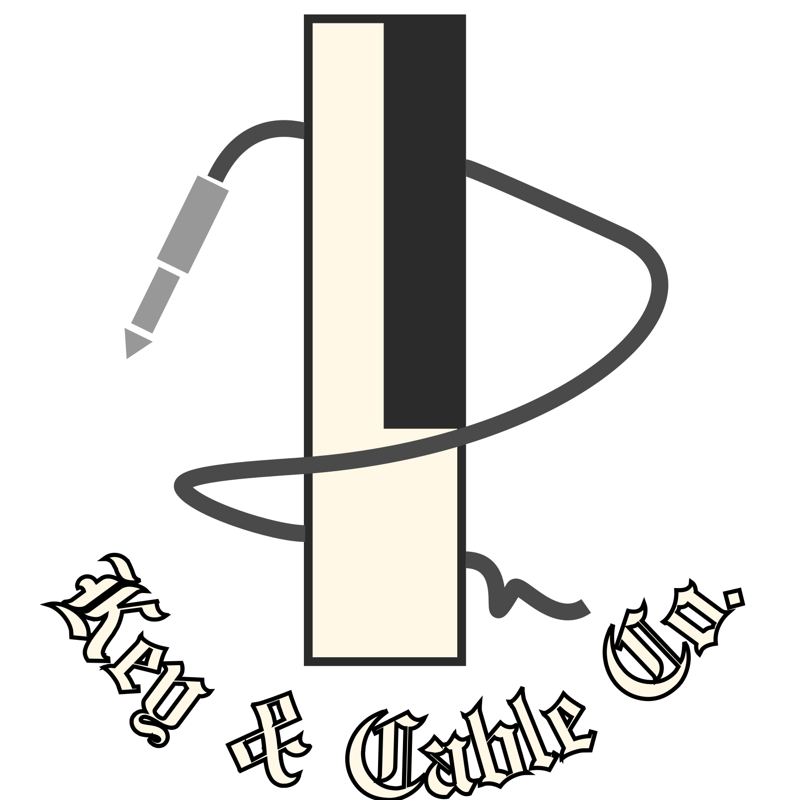

Minichord Lab
Pages that turn the minichord into a way to learn and play with harmony. Each listens to the chord buttons over MIDI and shows what your chord is doing.
See the harmony
What the chords are and how they relate: shapes, maps and charts that fill in as you play.
Harmony chart
Every chord of a key on one chart, one column per semitone, filled in from the key signature you set with the key change combo. Play a chord and its row lights up; a chord from outside the key gets its own row and a name for what it's doing.
Pitch-class clock
Every chord as a shape on a clock face. Transposing turns it, major to minor flips it, and the clock follows 19- and 31-note temperaments.
Tonnetz
Each triad lights a triangle on the map of harmony, and the trail names every P, L and R flip, beside how far your voices moved against the smoothest way.
Chord geometry
Every three-note chord as a point in Tymoczko's twisted prism. Going up transposes, going across changes shape, and the line between two chords is the smoothest voice leading.
Hear the tuning
What the temperaments do to a chord, measured and drawn.
Roughness
How rough each chord sounds in every temperament the minichord knows: one number per chord, the sweet and sour keys, and the dissonance curve behind them.
Beats
Two voices drawn against each other like an oscilloscope: still for a pure ratio, rolling when tempered. How fast every interval beats, in every temperament.
Play and practise
Games, ear training, and the minichord as a choir or a light show.
Spellbound
A game that makes you quick on the minichord: read a chord by its letters, numeral, staff or key and find it on the buttons, play scales and tunes on the harp, chain smooth voice-leading moves, or work out what a secret setting did.
Ear trainer
Hear a chord or a progression in your key, then play it back on the chord buttons. It checks the chord, and the bass note if you like, with hints when you miss.
Choir
Each voice of the chord sung by its own singer, with voice leading, glide and temperament controls and an MPE recorder.
String quartet
The four chord voices played by cello, viola and two violins, each on the string a player would choose, bowed, plucked, trembling, by the bridge or muted.
Stage
Full-screen visuals for a projector at a gig: ribbons, blooms and constellations drawn live from the voices, with rough chords shimmering and sweet ones still.
You'll need a minichord with the unofficial test-allFeatures firmware for MPE, key and temperament, and Chrome, Edge or Opera. Every view also has test chords that work without one.